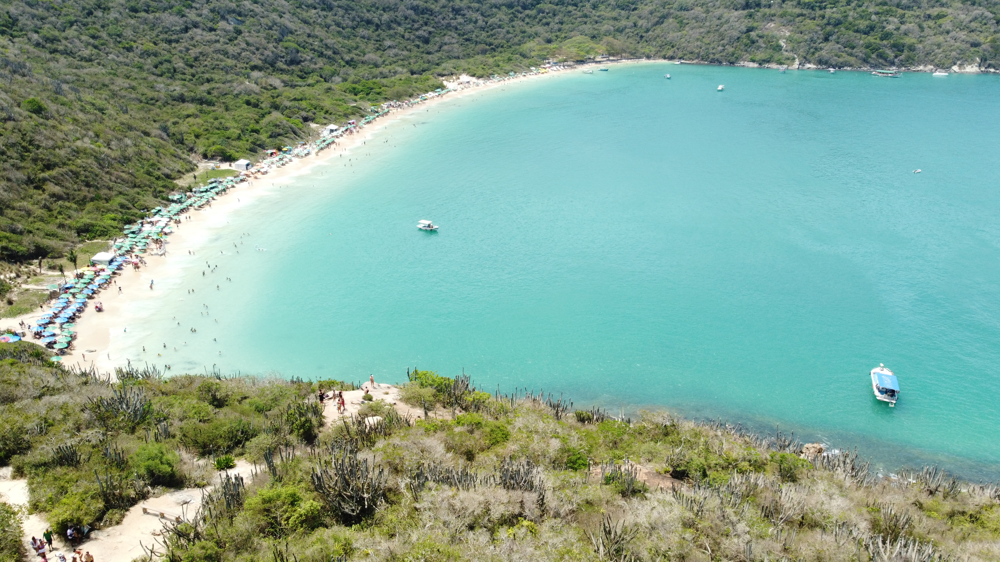

Mais vendido
Parapente no Rio
Voe sobre as montanhas e praias icônicas do Rio com pilotos certificados.
A partir de R$ 600
Viva aventuras autênticas, cercado pela natureza e acompanhado por guias profissionais.
Aventura, adrenalina e vistas inesquecíveis no Rio de Janeiro.
Voe sobre as montanhas e praias icônicas do Rio com pilotos certificados.
A partir de R$ 600Uma experiência de voo em parapente a partir de um dos pontos mais icônicos do Brasil.
A partir de R$ 1500Viva o Rio do alto e aproveite vistas panorâmicas únicas.
A partir de R$ 1000Viva a noite carioca com experiências únicas, muita música, energia e cenários inesquecíveis.
Descubra a Pequena África e o berço do samba carioca.
Festa latina cheia de ritmo e diversão
Conheça a verdadeira história, cultura e o dia a dia das favelas do Rio acompanhado por guias locais.
Conheça sua história e sua vibrante cultura urbana a partir de uma perspectiva segura e respeitosa.
Um tour cultural com vistas panorâmicas do Rio e a famosa escadaria de Michael Jackson.
Uma experiência autêntica que combina cultura local, natureza e pores do sol únicos.
Explore outras excursões e atividades que também fazem parte da nossa proposta no Rio.